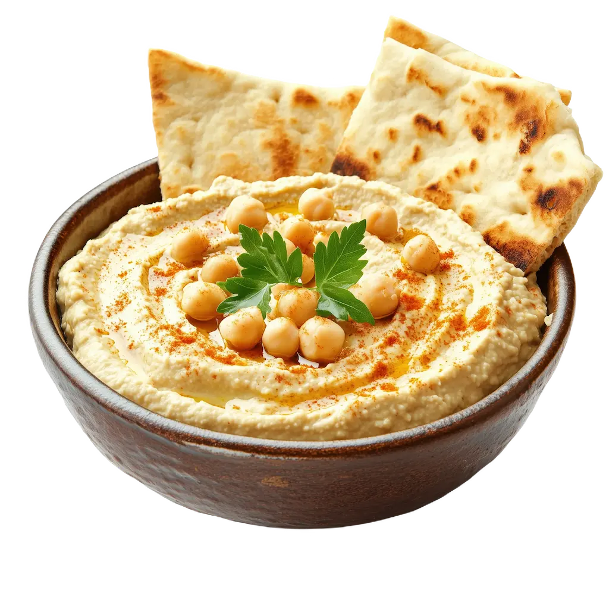

Hummus Casero con Bastones de Verdura
Tiempo: 15 minutos · Dificultad: Muy Fácil · Porciones: 4

Preparación
- Enjuaga y escurre los garbanzos cocidos con abundante agua fría.
- En un procesador de alimentos o licuadora, tritura el tahini junto con el jugo de limón durante 1 minuto hasta obtener una consistencia cremosa.
- Agrega el diente de ajo, el comino, una pizca de sal y el aceite de oliva. Procesa nuevamente hasta integrar bien.
- Añade los garbanzos y procesa durante 2 minutos. Vierte el agua helada poco a poco mientras licuas para darle una textura supersuave y esponjosa.
- Lava y corta las zanahorias, el pepino, el pimiento y el apio en bastones uniformes.
- Sirve el hummus en un tazón hondo, haz un pequeño surco con una cuchara, rocía un chorrito de aceite de oliva y espolvorea pimentón dulce por encima.
- Acomoda los bastones de verduras alrededor del tazón y disfruta inmediatamente.
¡Una opción de cena liviana, fresca y repleta de nutrientes!
Tips de nuestra comunidad
Descubre recetas, combinaciones y secretos compartidos por otros amantes de la cocina. ¿Tienes un secreto de cocina?
Compártelo con la comunidad.
Si le quitas la piel a los garbanzos antes de procesarlos, la textura del hummus te quedará absurdamente cremosa, igual a la de un restaurante.
Conserva los bastones de zanahoria y apio sumergidos en un tazón con agua helada dentro del refrigerador antes de servir para que queden extra crujientes.